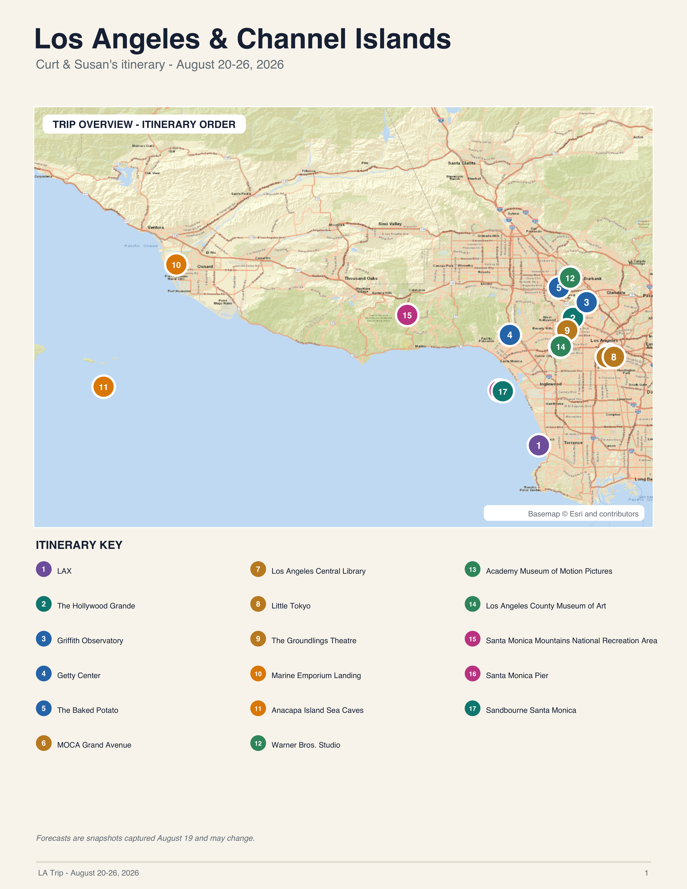

Hollywood and the World Science Fiction Convention
Susan and I have never traveled to Los Angeles. Well, already that's only a half-truth. I have been but "Susan and I" have not. Then again, I was 5 at the time — does that count? Our family drove out from Galesburg, Illinois in a late 1960s station wagon. Dad always owned a station and a sedan. I've carried along that tradition.
We stopped at the Grand Canyon and Las Vegas. From my vantage point walking between the one level hotel to the outside pool and back again, Las Vegas seemed like a small, hot, dusty stopover. Except for the spinning lady.
We went to Circus, Circus for dinner. A woman held onto a device attached to the ceiling by biting it. She set herself to spinning and was raised up to the ceiling where she proceeded around the room — all the while spinning and attached only be her teeth.
But I digress. My purpose for going to Los Angelos is to attend the World Science Fiction Convention. I've always wanted to go to one and retirement provided the opportunity. It was clear that since one of us was on the west coast, two would be even better. So Susan and I decided to check out LA as tourists — prepending the convention with Hollywood, Museums, kayaking in the Pacific, and, of course, a jazz club or two.